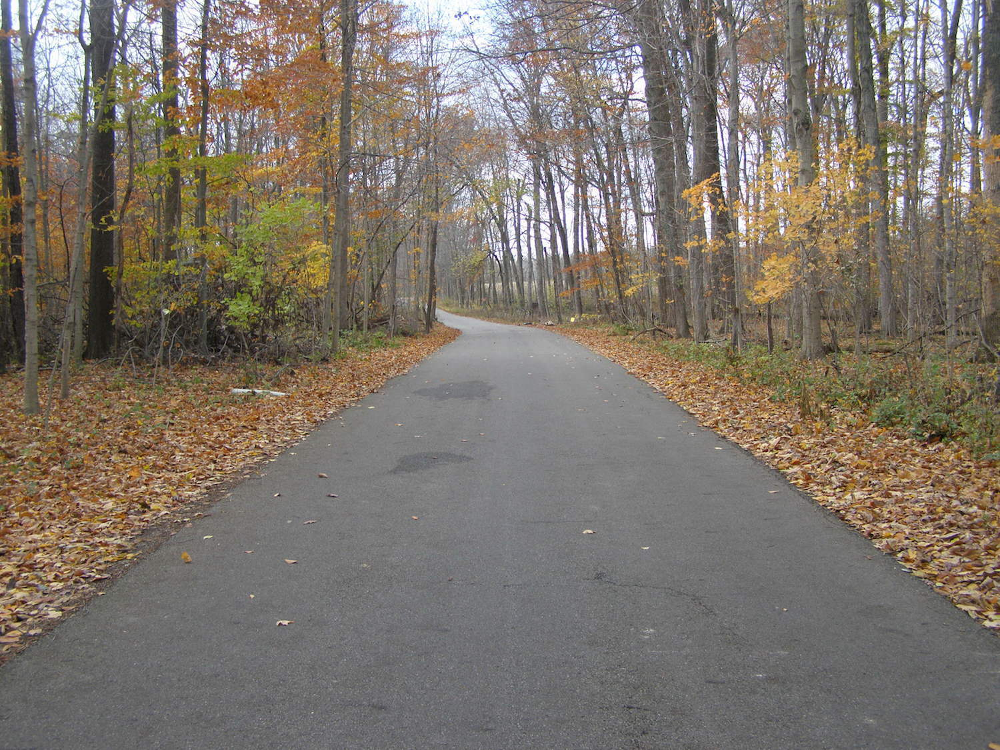
People see strange things on Staley Road--especially at night. But any time of day it is a gloomy, seemingly secluded roadway. Big trees on either side spread interwoven branches high overhead, creating a tunnel effect for most of its length. Definitely an eerie place even without specific ghost stories--but several such stories do exist.
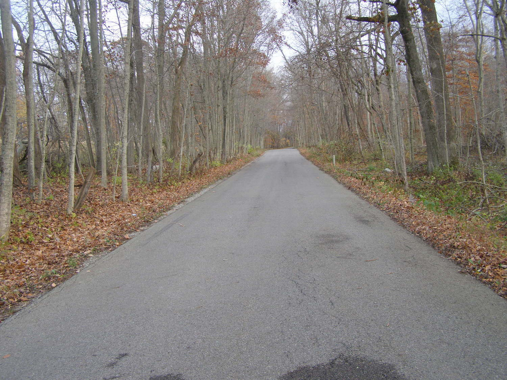
Although it runs north/northwest from the edge of New Carlisle, a small town west of Springfield in Clark County, the entire roadway is actually just across the county line in Miami County. It runs north from a sharp bend in S. Dayton-Brandt Road, then angles northwest until it reaches the east side of State Route 201. It's within several feet of exactly one mile in length.
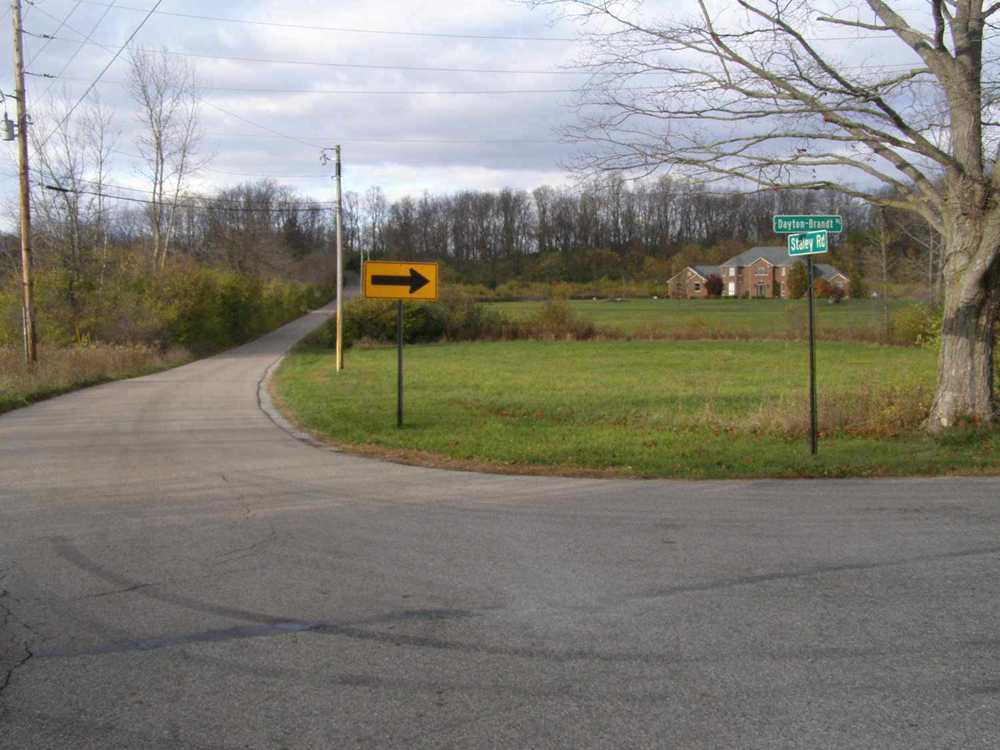
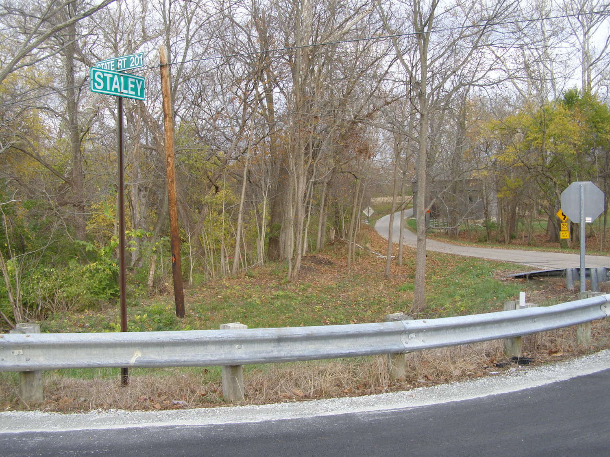
None of the hauntings tied to Staley Road are known to be based on actual historical fact. Many are localized retellings of folkloric favorites like the farmer (Old Man Staley, naturally) who murdered his entire family in the barn, or the devil worshippers who come to Staley Road to perform satanic rituals. One story concerns a "pied piper" figure who enticed a number of children from the nearby town of Bethel to accompany him to a barn, where he killed them with farming implements. Yet another, less far-fetched incident involves the discovery of two dead bodies in adjacent fields. The ghosts so frequently reported on Staley Road might be of these unknown people, or the murdered children, or members of the ill-fated Staley family itself.
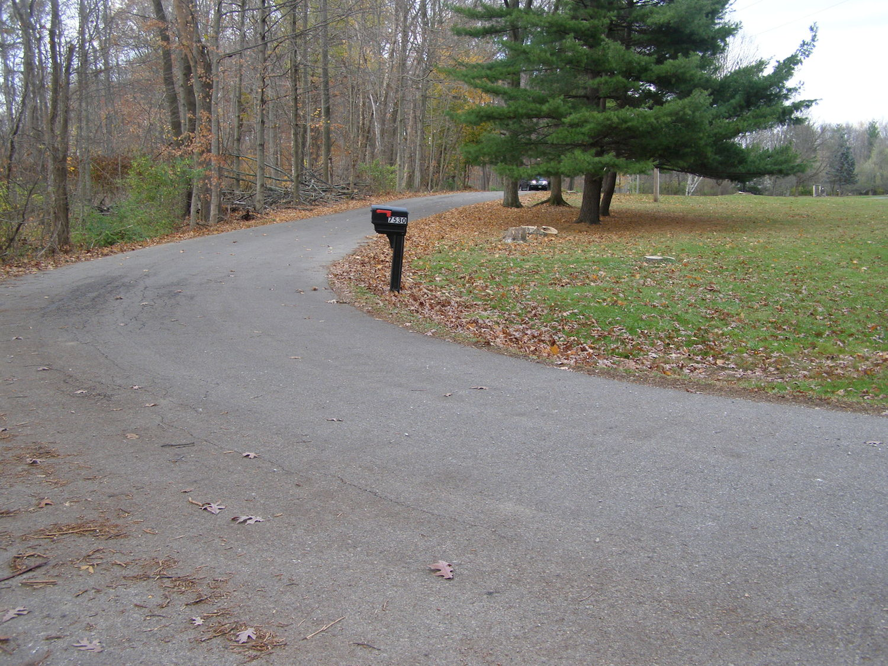
Fog gathers easily on Staley Road. Car engines are drained mysteriously, causing people to break down there. Headlights often short out. Batteries in everything from flashlights to cell phones go dead for no apparent reason.
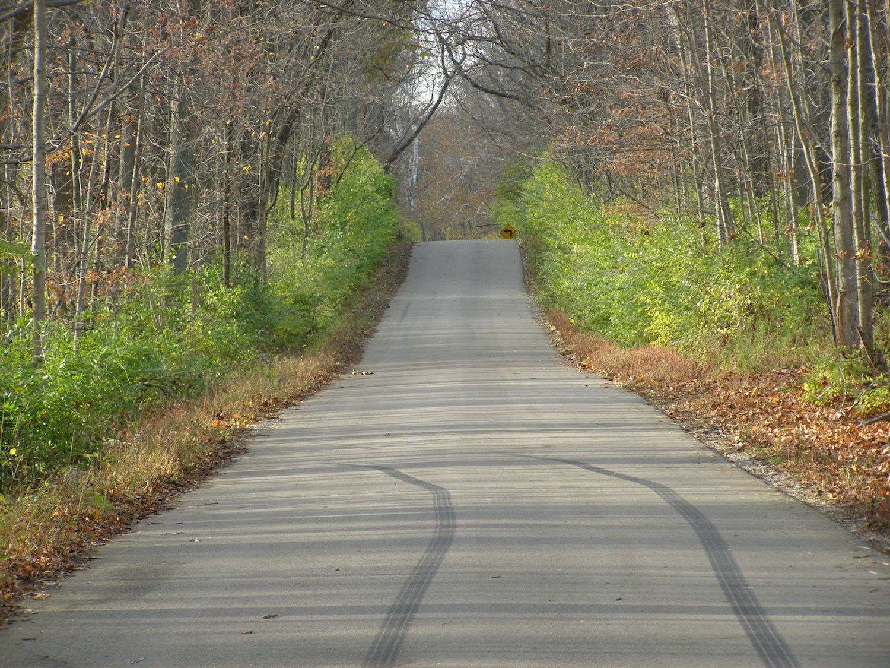
Many of the tales of terror associated with the road involve the infamous "Bloody Barn." Years ago it was painted a bright, bloody shade of red--which is almost certainly where it got the nickname. The constant intrusion of ghost-hunting trespassers caused the owners to repaint it. Currently it's the gray/brown color you see here.
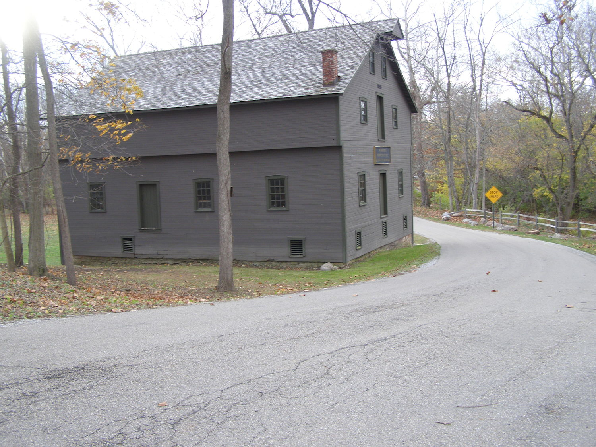
It's a beautifully built old barn with a finished loft. According to signs attached, it dates to 1818 (very old for Ohio) and is part of Bethel Mills. The real "Old Man Staley," Elias Staley, is listed as its proprietor. In reality he died peacefully and certainly took no family members with him when he went.
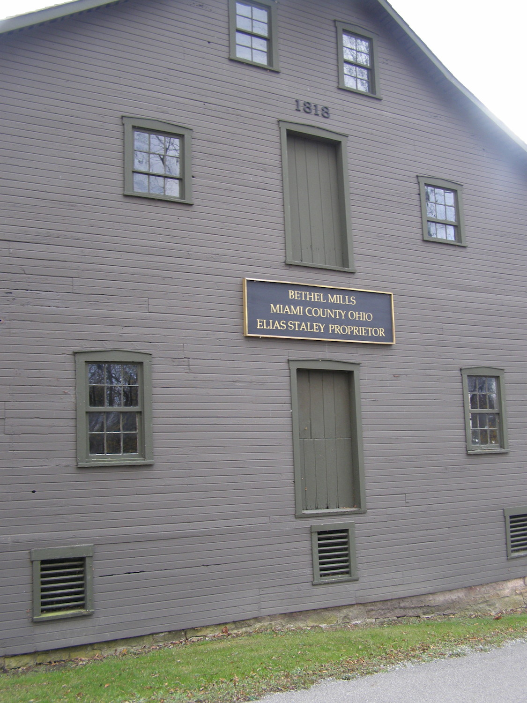
My lovely friend Stacey, who at 22 has lived all over and done more than most people do in a full lifetime, lived for a time in New Carlisle. When she returned for a friend's funeral in November 2014 we took time in the late afternoon for her to direct me to Staley Road and relate all the spooky stuff people in the area know by heart. It's definitely a road with some atmosphere, the kind of place where anything seems plausible after dark.
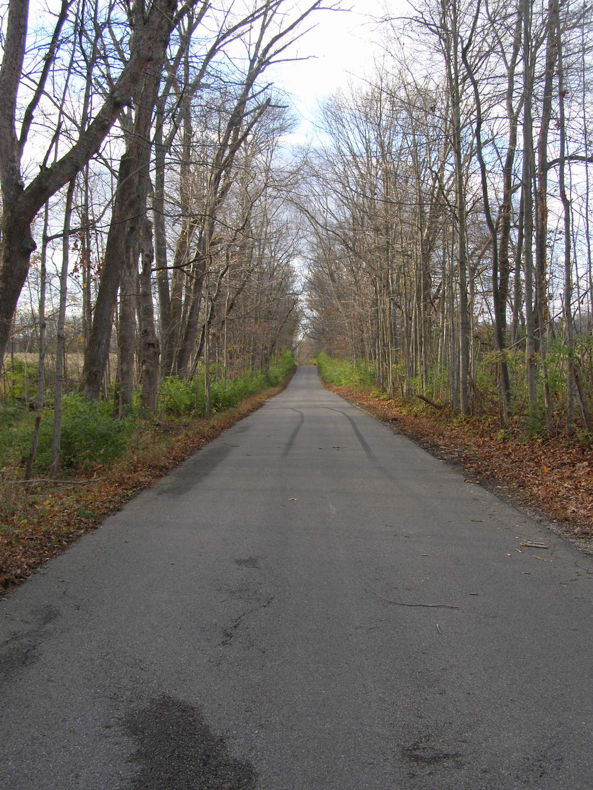
The most obvious thing about the barn relates directly to the most plausible part of Staley Road's bad reputation: it's really close to the road. Dangerously close. Not far from where it touches SR 201 it makes a tight turn around the end of the barn. A number of people are said to have died in car accidents here. I'd be quite surprised if this weren't the case. Especially heading northwest at night, the sharp turn would punish you for going much faster than 25. And the corner of the stone foundation is only about a foot away.
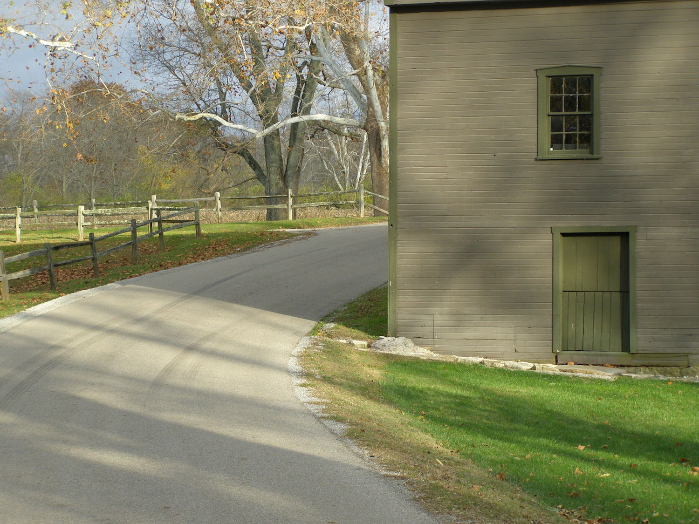
You can take your pick of the legends; one thing they all agree on is that Staley Road is quite haunted. People spotted walking on the leaf-strewn shoulder often fade away as your car passes by. Gunshots are heard there with no apparent source. Sometimes a ghostly presence will pace your car even at high speeds. Coming around the bend at the Bloody Bridge you're liable to be confronted by a spectral figure standing in the middle of the road--or, even scarier, lying in the road.
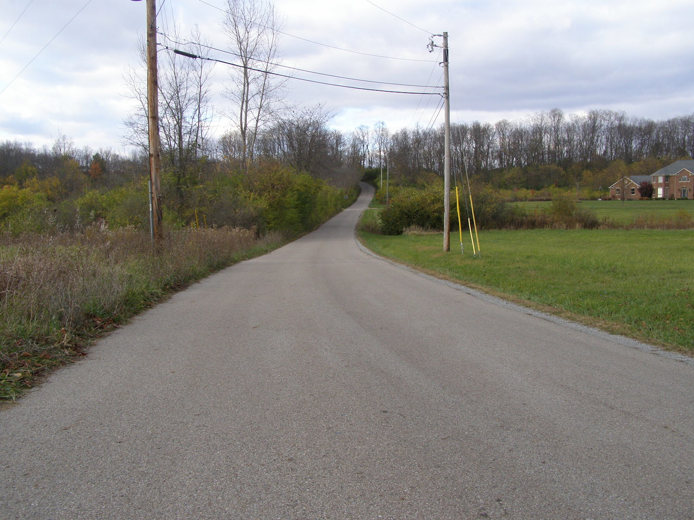
A contributor named Shannon sent me her account of a truly frightening manifestation on Staley Road. This is what happened to her:
About 30 years ago, four of us were riding down Staley Road with just our parking lights on, for spooky effect. Suddenly the driver yelled and swerved. I was in the passenger seat and I saw what appeared to be someone lying in the road, looking back over his shoulder at us. The driver sped to the end of the road and stopped. He said, "Did you see what I saw?" I asked what he saw and he described the same exact thing I had seen. We turned around with the lights on, went back. Nothing there.
A few years later I was repeating this to other friends. They said there were rumors about a spot in the road that kept sinking. We went out there (in the daylight), and when I showed them the spot, you could see where the road had been repaired and was slightly sunken in.
It was the last time I ever went back there even though I lived just outside of New Carlisle for many more years. This is true; I was never so scared in my life.
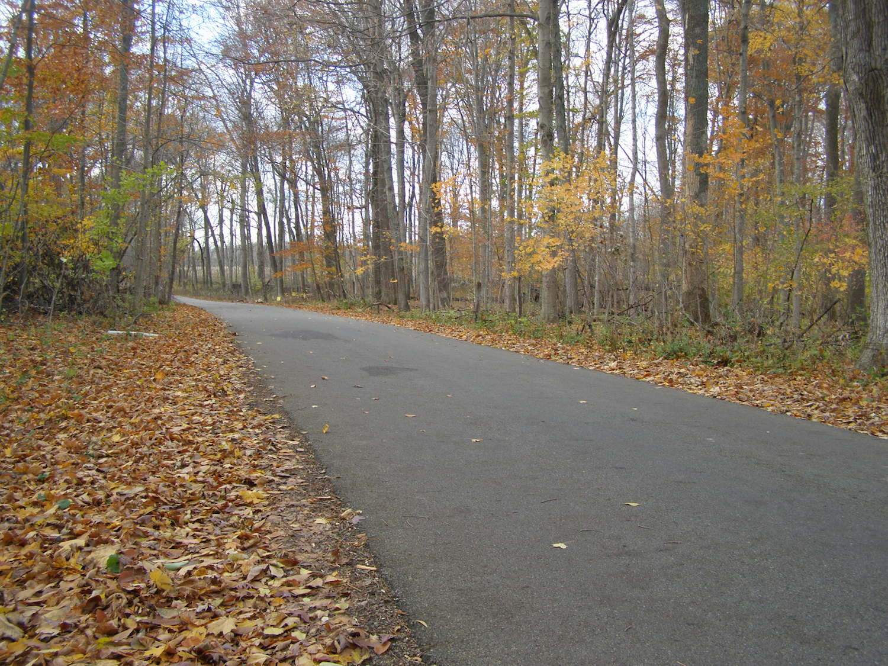
Even staying in your locked car doesn't seem to be guaranteed protection from the spirits on Staley Road. Who knows what else happens there late at night?
Dayton Ghost Stories: The Legend of Staley Road and the Haunted Barn
Back